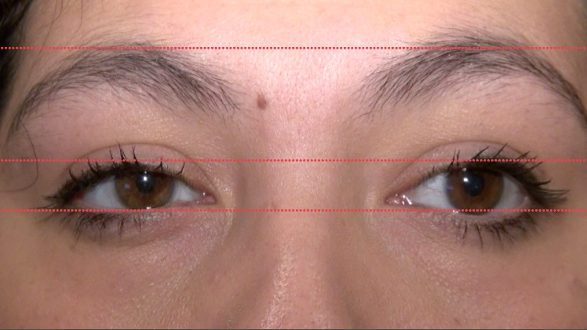
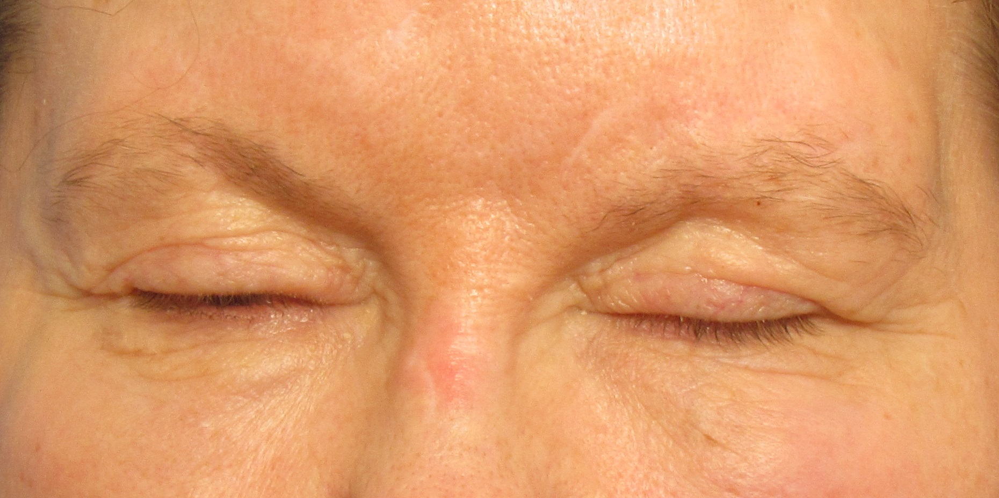
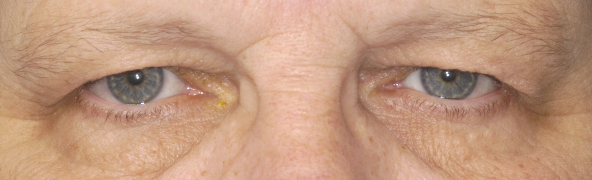
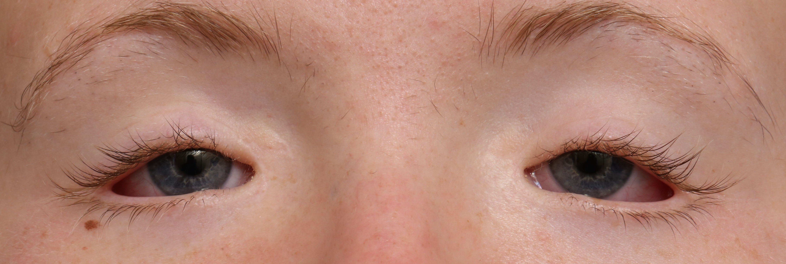
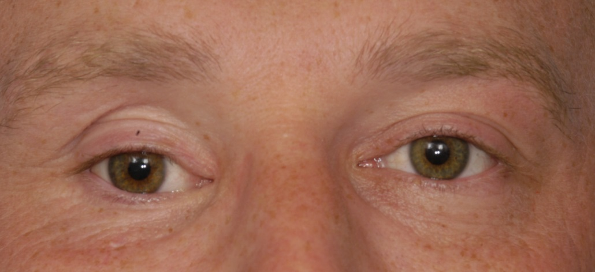
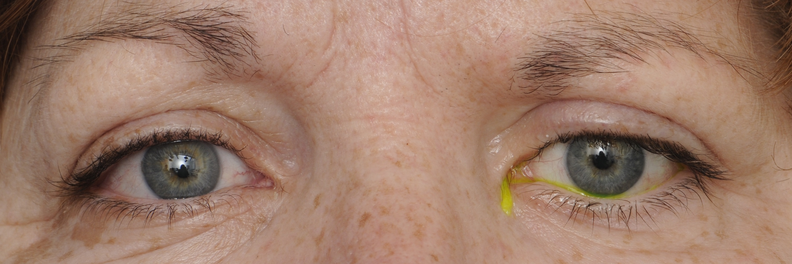
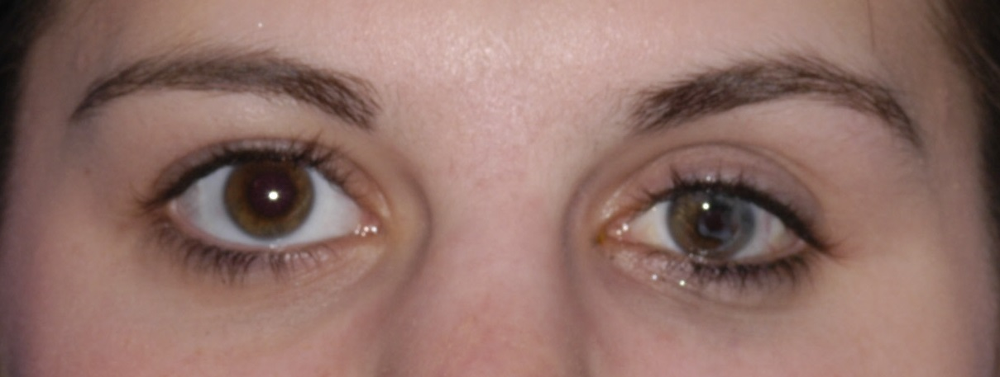
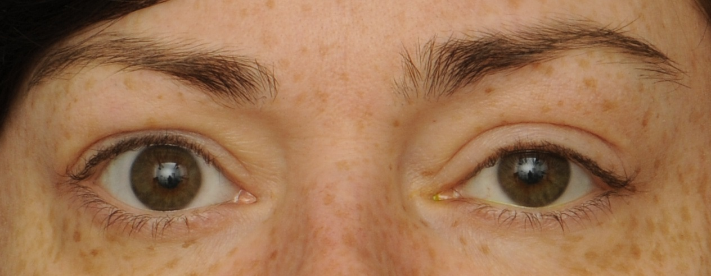

Ptosis

- Droopy upper lid caused by nerve, neuromuscular junction, or muscle lesions
- Common causes: third nerve palsy, Horner syndrome, myasthenia gravis, levator aponeurosis dehiscence, orbital trauma, chronic contact lens wear, congenital levator dysplasia
- Uncommon causes: orbital lesion, chronic topical corticosteroid use, Guillain-Barré syndrome, chronic inflammatory demyelinating polyradiculoneuropathy, botulism, mitochondrial myopathy, oculopharyngeal or myotonic dystrophy, congenital myopathy
-
Core clinical features
- Patient reports “hooded vision,” “sleepy eyes,” or may be unaware of any abnormality
- Lower border of the upper lid crosses the eye below the expected level
-
Possible accompanying clinical features
- Upper lid has reduced upward excursion
- Patient contracts the brow muscles to lift the ptotic upper lid
- Upper lid crease is absent or too low, as in congenital ptosis, aponeurosis dehiscence
- Brow is lower and lower lid is higher on affected side, as in hemifacial spasm or post-paretic facial contracture
- Upper lid does not fully descend when the eye moves into full downward gaze or during sleep (“lagophthalmos”), as in congenital ptosis, upper lid scarring
- Ptosis improves after restful eye closure or an ice pack placed on the upper lid, as in myasthenia gravis
- Ptosis develops in the contralateral eye when you lift the ptotic lid, especially in myasthenia gravis, but in any cause of ptosis
- Upper lid is thickened or deformed, as in lid tumor, inflammation, or scarring

- Involuntary contraction of the orbicularis muscle in blepharospasm
- Dermatochalasis
- Blepharophimosis
- Upward deviation of the eye in hypertropia
- Downward displacement of the eye from an orbital mass
- Brow droop
- Orbicularis oculi contracture in reinnervated facial palsy (“post-paretic facial contracture”)
- Enophthalmos
- Lid retraction on the opposite side
- Sleepiness







- Exclude imitators of true ptosis (“pseudoptosis”)
-
Identify one or more of the following accompanying features of true ptosis
- Diplopia, ductional deficits, mydriasis (third nerve palsy)
- Fatigable ptosis, orbicularis weakness, bulbar and extremity weakness (myasthenia gravis)
- Symmetrically reduced and slow ocular ductions (chronic progressive external ophthalmoplegia)
- Ipsilateral miosis (Horner syndrome)
- Orbital or lid deformity (orbital mass)
- History of rigid contact lens wear (traumatic or inflammatory levator damage)
- Downwardly displaced or absent upper lid crease (of levator muscle trauma, levator aponeurosis weakness, or congenital ptosis)
-
Trap: beware of diagnosing age-related stretching of the levator tendon (“aponeurotic ptosis”) unless you have excluded other causes
-
Tip: an absent or lowered lid crease is not diagnostic of aponeurotic ptosis!
-
Trap: do not diagnose Horner syndrome without pharmacologic confirmation by reversal of anisocoria with topical instillation of apraclonidine 0.5% (or failure of pupil dilation following topical instillation of cocaine 10% in children aged 2 years or younger)
-
Tip: chronic topical apraclonidine instillation may be useful for relief from ptosis of Horner syndrome if the patient wishes to avoid surgery
-
Tip: the Cogan lid twitch sign is not specific for myasthenic ptosis!
- Ptosis surgery is usually successful, but…
-
Trap: do not recommend lid-lifting surgery until you have excluded reversible causes of ptosis